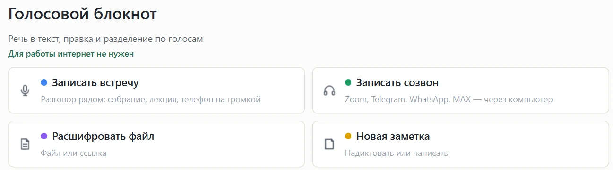

Как надиктовать заметку
Начните заметку
Нажмите Ctrl + F9 в любой программе или выберите «Новая заметка» на главном экране. Прозвучит короткий сигнал — запись пошла.
Говорите сколько нужно
Текст появляется по мере распознавания, а пауза в пару секунд начинает новый абзац. Заметку можно поставить на паузу и продолжить.
Закончите
Ещё раз нажмите Ctrl + F9 — заметка сохранится. Забыли остановить? Через 5 минут тишины программа предупредит, через 10 — сохранит заметку сама.
Вернитесь к заметке
Заметка лежит в «Записях» вместе со звуком: можно переслушать место, поправить слово и скопировать текст.
Выберите свою клавишу
Откройте «Настройки» → «Дополнительно» → «Голосовая заметка». Там можно сменить клавишу, выключить сигнал и решить, сохранять ли звук.
